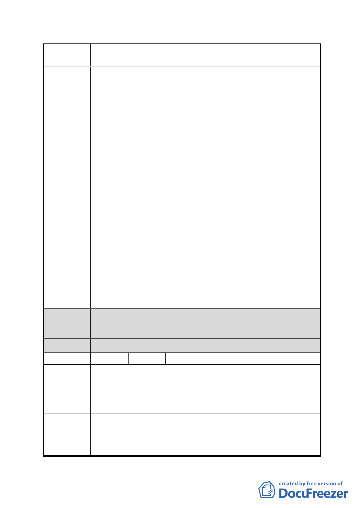

案 名 擬定臺北市南港區鐵路地下化沿線土地細部計畫案
都委會
決議
點」之規定部分，本府回應意見同編號 9。
3.有關建議建築基地提供室內型公益性設施空間，供文教、藝
術展覽、表演使用者得不計入樓地板面積 1 節。經查本市土
地使用分區管制自治條例第 80 條之 1 業規範留設公益性設
施得給予容積獎勵之規定，故本計畫不另增訂。
4.有關建議將 F 區列入空橋連通範圍 1 節，考量本區需俟後續
辦理更新事業計畫公展，始變更為商業區，目前仍為私人工
廠房暫無設置空橋連通之必要，建議後續該區提出變更都市
計畫時，再行考量納入。
5.有關建議 F 區中間 8 公尺帶狀式開放空間之留設位置之合理
性 1 節，考量 F 地區僑泰興與聯華廠房之街廓過長，故規範
於該區中間留設 8 公尺帶狀式開放空間，以延續北側道路至
鐵路地下化新生道路作為地區性人行通道為原則，惟若因基
地整體開發需要，該帶狀式開放空間之位置得經都市設計審
議通過後，酌予調整。
6.經查南港段 2 小段 585-3 地號交通用地係於 90 年 9 月 28 日
公告之「修訂臺北市南港區都市計畫（主要計畫）通盤檢討
案」由鐵路用地變更為交通用地，該計畫書規定由鐵路用地
變更為交通用地者應無償提供本府使用；又該筆土地現為南
港專案工程用地，故該筆土地應由交通部鐵路局或鐵改局取
得。不建議納入重劃範圍。
本陳情地點非屬修正後細部計畫範圍。
分區
編號
陳情地點
全區
22 陳情人
細部計畫範圍
李議員彥秀
陳情理由
「擬定臺北市南港區鐵路地下化沿線土地細部計畫案」牽涉
到南港鐵路地下化沿線民眾權益至巨。
請委員會妥善審議，儘速通過。
建議辦法
- 33 -